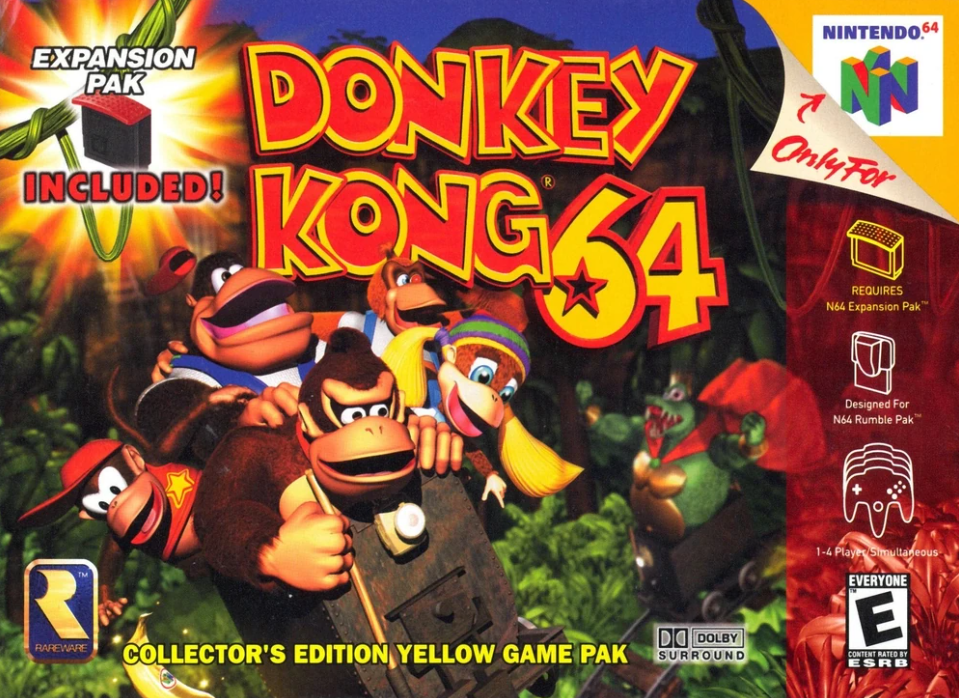
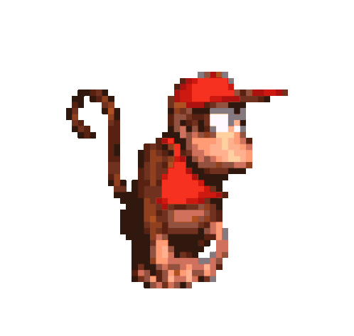
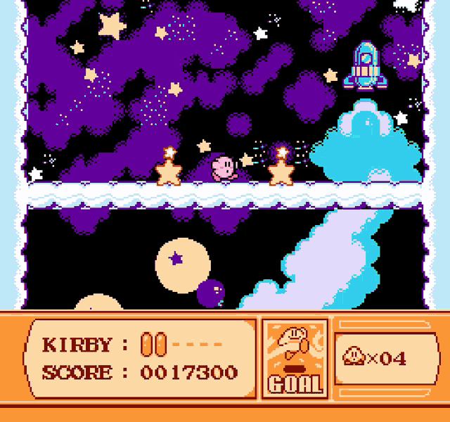
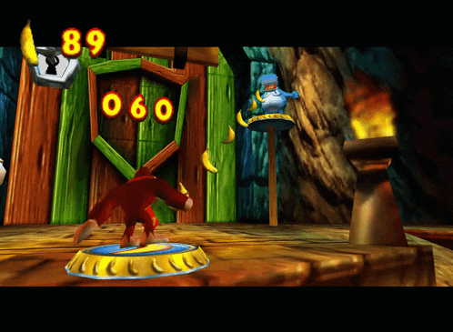

Story

The game occurs after Donkey Kong Land 3, with King K. Rool returning in
a mechanical island armed with the Blast-O-Matic to destroy Donkey Kong
Island. The plan fails as the island crashes, damaging the weapon. K.
Rool captures Diddy, Lanky, Tiny, and Chunky Kongs, steals Golden
Bananas, and locks them away. Donkey Kong, alerted by Squawks, trains
with Cranky to gain the Simian Slam ability and begins his mission. He
frees K. Lumsy, a friendly Kritter, who helps unlock new areas like
Jungle Japes. Donkey Kong reunites with allies like Funky, Candy, and
Snide while collecting Golden Bananas and other items. The Kongs tackle
challenges in worlds such as Angry Aztec, Frantic Factory, and Gloomy
Galleon, rescuing imprisoned Kongs, unlocking upgrades, and defeating
bosses guarding keys to K. Lumsy's cage. Key collectibles include Banana
Medals, blueprints for the Blast-O-Matic, and Nintendo and Rareware
Coins, vital for accessing later stages. The adventure culminates in
Hideout Helm, where the Kongs shut down the Blast-O-Matic and obtain the
final key. K. Lumsy is freed, inadvertently disabling K. Rool's escape.
The Kongs face him in a boxing match, ultimately defeating him. The game
concludes with a celebration at Donkey Kong's house. Players control one
of five Kongs, each with unique abilities needed to retrieve Golden
Bananas, explore vast levels, and progress through the story.
Gameplay

The player controls one of the five available Kongs, who must venture
into open and vast levels similar to those found in Super Mario 64.
Their objective in every level is to obtain the Golden Bananas among
other collectibles. Only Donkey Kong is available from the start, and
the other four Kongs, Diddy Kong, Lanky Kong, Tiny Kong, and Chunky
Kong, are eventually freed and become available during the adventure.
The player can use the Tag Barrels, located throughout every level, to
switch to another Kong to play as. All five Kongs are required for
completing the game because each of them must use their unique abilities
to recover the Golden Bananas. There are 25 Golden Bananas in every
level, and each of the five Kongs have their own five Golden Bananas to
obtain. Banana Bunch Coins are currency used by the Kongs to pay for
Cranky Kong's, Funky Kong's, and Candy Kong's respective services. At
Cranky's Lab, the Kongs can purchase a potion to learn a unique ability.
At Funky's Store, each Kong can purchase their own weapon that fires a
certain type of ammo.

At Candy's Music Shop, the Kongs can purchase their own musical
instrument to perform on a Music Pad. Cranky offers more abilities to
the Kongs in the later levels, and likewise, Candy and Funky offer more
upgrades in later levels. DK Isles is the hub area from where the Kongs
can access the other levels. Every level has its own lobby on DK Isles
and a portal leading into the level itself. At first, the level lobbies
are blocked or inaccessible by the Kongs. To unlock a level's lobby, the
Kongs must use a Boss Key to open a padlock of K. Lumsy's cage. This
results in K. Lumsy happily celebrating and creating a tremor that
unlocks access into a lobby (with the exception of the first level,
Jungle Japes, which is accessed after Donkey Kong meets K. Lumsy). In
every lobby, B. Locker prevents the Kongs from entering a level unless
they have at least a certain number of Golden Bananas to meet B.
Locker's requirement. The later levels require the Kongs to have more
Golden Bananas in order to enter. Every level has a boss whose arena is
accessible from the Troff 'N' Scoff location, Here the Kongs feed Scoff
with a certain number of bananas, and as Scoff eats them, he
progressively becomes larger. Eventually Scoff becomes large enough for
Troff's platform to be raised up to the key for Troff to unlock the door
leading to the level boss. Each boss can only be fought by a certain
Kong, whose face appears on the door just before the battle. The boss
battles are constructed around the designated Kong's abilities. After
that Kong defeats the boss, the Kongs obtain a Boss Key. The game
features two Animal Friends, Rambi and Enguarde, who each have an animal
crate located in Jungle Japes and Gloomy Galleon respectively. Only
Donkey Kong can transform into Rambi and only Lanky can transform into
Enguarde. Rambi can attack enemies and smash crates and wooden walls,
and Enguarde can attack enemies and smash open chests to reveal hidden
items.
|
Potions
|
| Kong |
Pad Move |
Barrel Move
|
Special Move
|
| Donkey Kong |
Baboon Blast A DK pad that will blast him into the
sky to account a Barrel Blast challenge
|
Strong Kong Allows DK to be invincible
|
Gorilla Grab Allows DK to pull levers
|
|
Diddy Kong
|
Simian Spring A Diddy pad that allows Diddy to jump
great heights off his tail
|
Rocketbarrel Boost Allows Diddy to fly with a
jetpack
|
Chimpy Charge Allows Diddy to charge head first
into gongs or certain switches
|
|
Lanky Kong
|
Baboon Balloon A Lanky pad that allows Lanky to
fill up with hot air and float to unreachable places
|
Orangstand Sprint Allows Lanky to run on his hands
very fast
|
Orangstand Allows Lanky to walk up steep hills or
platforms on his hands
|
| Tiny Kong |
Monkeyport A Tiny pad that allows her to transport
to another Tiny pad
|
Mini Monkey Allows Tiny to shrink to a teeny-tiny
size to get into small places or passageways
|
Pony Tail Twirl Allows Tiny to fly through the air
with her ponytails
|
| Chunky Kong |
Gorilla Gone A Chunky pad that allows Chunky to
become invisible
|
Hunky Chunky Allows Chunky to increase in size
|
Primate Punch Allows Chunky to use a roundhouse
punch that would KO most enemies
|